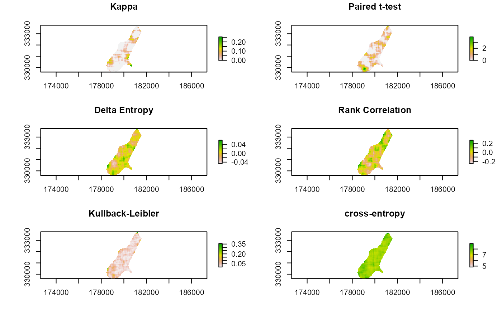

Compares two categorical rasters with a variety of statistical options
This function provides a various statistics for comparing two classified maps. Valid options are:
kappa - Cohen's Kappa
wkappa - Cohen's Weighted Kappa (not yet implemented)
t.test - Two-tailed paired t-test
cor - Persons Correlation
entropy - Delta entropy
cross-entropy - Cross-entropy loss function
divergence - Kullback-Leibler divergence (relative entropy)
Kappa and t-test values < 0 are reported as 0. For a weighted kappa, a matrix must be provided that correspond to the pairwise weights for all values in both rasters. Delta entropy is derived by calculating Shannon's on each focal window then differencing them (e(x) - e(y))
raster.change( x, y, d = c(3, 3), stat = c("kappa", "wkappa", "t.test", "cor", "entropy", "cross-entropy", "divergence"), w = NULL, out.raster = NULL, mask = FALSE, force.memory = FALSE )
| x | First raster for comparison, rasterLayer class object |
|---|---|
| y | Second raster for comparison, rasterLayer class object |
| d | Rectangular window size, must be odd but not necessarily square |
| stat | Statistic to use in comparison, please see details for options. |
| w | Weights if stat="kappa", must represent same classes as input rasters |
| out.raster | Optional output raster |
| mask | (FALSE/TRUE) mask output to original rasters |
| force.memory | (FALSE/TRUE) Force in memory processing, may fail with insufficient RAM |
A raster layer or stack object one of the following layers:
kappa Kappa or Weighted Kappa statistic (if stat = "kappa")
correlation Paired t.test statistic (if stat = "cor")
entropy Delta entropy (if stat = "entropy")
divergence Kullback-Leibler divergence (if stat = "divergence")
cross.entropy Cross-entropy (if stat = "cross.entropy")
t.test Paired t.test statistic (if stat = "t.test")
p.value p-value of the paired t.test statistic (if stat = "t.test")
Cohen, J. (1960). A coefficient of agreement for nominal scales. Educational and Psychological Measurement, 20:37-46
McHugh M.L. (2012) Interrater reliability: the kappa statistic. Biochemia medica, 22(3):276–282.
Kullback, S., R.A. Leibler (1951). On information and sufficiency. Annals of Mathematical Statistics. 22(1):79–86
Jeffrey S. Evans <jeffrey_evans@tnc.org>
# \donttest{ library(sp) library(raster) data(meuse.grid) r1 <- sp::SpatialPixelsDataFrame(points = meuse.grid[c("x", "y")], data = meuse.grid) r1 <- raster(r1) na.idx <- which(!is.na(r1[])) r1[na.idx] <- round(runif(length(na.idx), 1,5),0) r2 <- sp::SpatialPixelsDataFrame(points = meuse.grid[c("x", "y")], data = meuse.grid) r2 <- raster(r2) r2[na.idx] <- round(runif(length(na.idx), 1,5),0) s = 11 ( r.kappa <- raster.change(r1, r2, d = s, mask = TRUE) )#> class : RasterLayer #> dimensions : 104, 78, 8112 (nrow, ncol, ncell) #> resolution : 40, 40 (x, y) #> extent : 178440, 181560, 329600, 333760 (xmin, xmax, ymin, ymax) #> crs : NA #> source : memory #> names : kappa #> values : 0, 0.254459 (min, max) #>( r.ttest <- raster.change(r1, r2, d = s, stat="t.test", mask = TRUE) )#> class : RasterBrick #> dimensions : 104, 78, 8112, 2 (nrow, ncol, ncell, nlayers) #> resolution : 40, 40 (x, y) #> extent : 178440, 181560, 329600, 333760 (xmin, xmax, ymin, ymax) #> crs : NA #> source : memory #> names : ttest, pvalue #> min values : 0.0000000000, 0.0001283928 #> max values : 3.892935, 1.000000 #>( r.ent <- raster.change(r1, r2, d = s, stat="entropy", mask = TRUE) )#> class : RasterLayer #> dimensions : 104, 78, 8112 (nrow, ncol, ncell) #> resolution : 40, 40 (x, y) #> extent : 178440, 181560, 329600, 333760 (xmin, xmax, ymin, ymax) #> crs : NA #> source : memory #> names : entropy #> values : -0.04694469, 0.05922219 (min, max) #>( r.cor <- raster.change(r1, r2, d = s, stat="cor", mask = TRUE) )#> Warning: the standard deviation is zero#> class : RasterLayer #> dimensions : 104, 78, 8112 (nrow, ncol, ncell) #> resolution : 40, 40 (x, y) #> extent : 178440, 181560, 329600, 333760 (xmin, xmax, ymin, ymax) #> crs : NA #> source : memory #> names : cor #> values : -0.2445502, 0.2680207 (min, max) #>( r.ce <- raster.change(r1, r2, d = s, stat = "cross-entropy", mask = TRUE) )#> class : RasterLayer #> dimensions : 104, 78, 8112 (nrow, ncol, ncell) #> resolution : 40, 40 (x, y) #> extent : 178440, 181560, 329600, 333760 (xmin, xmax, ymin, ymax) #> crs : NA #> source : memory #> names : cross.entropy #> values : 4.845537, 8.961636 (min, max) #>( r.kl <- raster.change(r1, r2, d = s, stat = "divergence", mask = TRUE) )#> class : RasterLayer #> dimensions : 104, 78, 8112 (nrow, ncol, ncell) #> resolution : 40, 40 (x, y) #> extent : 178440, 181560, 329600, 333760 (xmin, xmax, ymin, ymax) #> crs : NA #> source : memory #> names : divergence #> values : 0.0003018903, 0.3576438 (min, max) #>opar <- par(no.readonly=TRUE) par(mfrow=c(3,2)) plot(r.kappa, main="Kappa") plot(r.ttest[[1]], main="Paired t-test") plot(r.ent, main="Delta Entropy") plot(r.cor, main="Rank Correlation") plot(r.kl, main="Kullback-Leibler") plot(r.ce, main="cross-entropy")